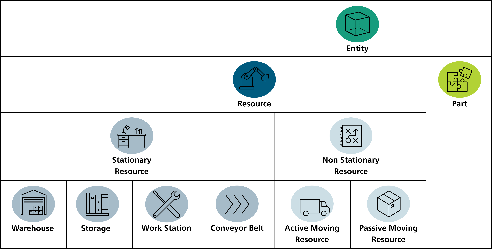

State Model 🏭
Introduction
The state model describes a virtual "state" of the environment. The description contains immaterial objects (orders, processes, etc.) as well as material objects that have a physical counterpart (machines, etc.) on the shop floor.
If only the state is described, we call it "static" state model. In contrast, the "dynamic" state model extends the "static" one with the historical and future changes/ dynamics. In general, it is the same object, but additionally holds the dynamics. This principle is comparable to the version control that stores the git commits, where each node holds the state, but also the version history is accessible. In contrast to git commits, also planned attribute changes in the future are storable.
The process-oriented modeling approach suits especially for learning applications.
Entities
The entities describe the physical objects on the shop floor. Entities are of a predefined type and have a quality value between 0 (bad) and 1 (good). Next to them, they can be situated in another resource.
Entities are differentiated between resources and parts.
The class structure is depicted in the following picture:

Entities classification
Resources are used to transform or change entities (including parts as well as resources). Next to the situation in another resource that has all entities, resources have a physical body (with position, length and width). Additionally, to handle chronological execution of the processes on the resources, a process execution plan is used to plan the process executions.
Stationary resources are used for resources that have a fixed position on the shop floor, such as a workbench, a machine or even obstacles. Additionally to the resources, they have an efficiency distribution that can influence the process lead time. The entry edge and exit edge can be used for the transport resources as starting point, respectively as arrival point. If needed, they can be further detailed to storages, warehouses, workstations and conveyor belts. Storages are used to store/ hold other resources or parts (entities). Each storage can only hold entities of the same entity type (respectively super entity type). Therefore, a storage can be used as storage for parts, a loading station for AGVs, a break room for the workers, etc. Next to the storage, the warehouse is used to manage different storages. Therefore, entities with different entity types can be stored in the warehouses, respectively the storages of them. Note, with the storage and warehouse elements, different elements from the logistics such as supermarkets, shelves, etc. can be modelled in an abstract way. If you should use a storage or a warehouse depends only on the amount of entity types to be stored. The workstation can equally to the warehouse also hold different entity types (buffer stations). However, workstations have differed in their resource purpose, since they are used to process parts or resources (entities), which is not the inherent aim of the warehouses. Conveyor belts are used are resources that can transport resources or parts from their start to their end. At the start and at the end, a storage is situated. Since they have, only one start and one end, forks are modelled by using more than one conveyor belt element, linked through their origin and destination storages. A conveyor belt has additionally to stationary resources, a flow direction, entities that are currently on the conveyor belt (as sorted queue) restricted by a capacity and allowed entity types. Additionally, as stated before, the conveyor belt is defined through an origin and a destination storage. The conveyor length and the pitch are also specified and can be used for the process lead time determination.
In contrast to stationary resources, non-stationary resources can move by their self on the shop floor (active moving resources) or moved by other resources (passive moving resources). Similar to the stationary resources, also the non-stationary resources have storage places that can be used, e.g., to transport other entities. Next to them, the orientation is used to manage the direction of the resource. Active moving resources could be automated guided vehicles (AGVs), workers, forklifts, etc. Passive moving resources are resources that are transported by other resources, such as tools, boxes, pallets, etc. They cannot move by their own. While the stationary resources use the efficiency to determine the performance of the resource, the non-stationary resources use the speed. Additionally, the energy is managed through the attribute’s energy capacity, energy level and energy consumption.
In contrast, parts are consumed and can be further differentiated into two main groups. First, the products that are delivered to the customer and are associated with an order. Second, parts that are processed, e.g., as subpart. Parts can be a (sub-)part of another part or contain parts themselves. These parts can be removable or not.
Sales
In the sales area, the order object represents the core element. An order object is associated with a product configured by the customer.

Connection from the sales area to the shop floor
The order contains a pool of features that are chosen by a customer. Eventually, the feature pool specifies a product configuration that can be highly individual. E.g., a bicycle that consists of a sport frame, a disc brake and other features. If, for example, the disc brake is broken down further in a bill of materials, the feature can consist of several parts, which are processed in one or more processes. The logic is taken from complex product configuration systems as used in the automotive industry. The idea is that the feature pool of the (sales-) order is used as input for the work order that define the processes need to be executed.
Processes
In the work order, the features are mapped to value added processes. Value added processes, in contrast to normal processes, are mapped to a feature and have predecessor and successor (value added) processes. Through the predecessor and successor processes, a priority chart is defined for each order individually based on the features chosen, respectively, the process associated with them. The priority chart describes the processes as well as the possible sequences of the processes a product has to pass to be finished.
Through processes that are executed, the participating entities (resources and parts) can change their state and eventually, the system state. How the system can be changed is described in process models. The process models are namely, the resource, transition, transformation, quality, and time model.
RESOURCE MODEL
The resource model includes a set of resource groups. Each of them is a combination of different resources that are required to execute the process.
Example:
A picking process requires the resources' worker and picking station that builds a resource group. A picking robot and the picking station can build an alternative resource group. Both are able to execute the process, but only one of them is chosen for the actual process execution.
Next to 'greater' resources also tools can be part of a resource model.
TRANSITION MODEL
The transition model outlines spatial position changes or resource assignments (e.g., from a box into the shelf). Therefore, it contains possible origins and destination.
Example:
A transport transition could be described through two picking stations, one as origin and the other as destination.
A resource assignment transition could be described through a transport resource and a (stationary) storage, also one as origin and the other as destination. As example, a part can be stored in the transport resource, which was stored in the storage before.
A special case of the resource assignment transition is the incoming goods transition (source behavior) as well as the customer delivery (sink behavior). In these cases, the origin or the destination remains empty.
TRANSFORMATION MODEL
The transformation model describes how entities are transformed within the process. To describe the transformation, a directed acyclic graph (DAG) is designed based on entity transformation nodes. Since every entity transformation node contains parent and children’s nodes, the relations within the graph are described decentralized. The root nodes of the graph are stored in the transformation model Each entity transformation node contains mainly the type of the entity and the amount needed that will be transformed in the children nodes.
Hence, the entity types required for the transformation can be derived through iterating over the root nodes of the transformation model. Next to the entity types, the transformation type and the input output behavior of the entity transformation nodes describe how the entities are transformed. These are based on the manufacturing processes defined in DIN 8580:
- Primary Processing Operations
- Shaping Operations
- Property Operations
- Surface Operations
- Secondary Assembly Operations
- Permanent joining Operations
- Fastening Operations
The input output behavior differentiates between: - EXIST: Part is neither created nor destroyed by the process it has to exist before and still exists at the end - CREATED: Part is created in the process - DESTROYED: Part is destroyed at the end of the process (e.g., scrap bad quality, parts with no further tracking)
The transformation type differentiates between: - MAIN_ENTITY: Necessary to start the process if not created. Part leaves the process unchanged or extended - BLANK: Necessary to start the process if not created. Part is transformed/ processed. The entity type is changed, but the attributes remain untouched (no further parts attached) (e.g., bending) - SUB_PART: Necessary to start the process if not created. - Part is built into the main_entity and can be taken apart later (e.g., assembly, packing) - INGREDIENT: Necessary to start the process if not created. Part ist transformed into or combined with the main entity. Cannot be removed later (e.g., surface coating) - DISASSEMBLE: SubParts can be disassembled in the children nodes. - SUPPORT: Necessary to marry (NonStationaryResource and Parts) or (NonStationaryResource and NonStationaryResource). The marriage is needed to create a (longer) connection, for example, for transport. E.g.: AGV and main_product (can be identified if the SUPPORT is also found in the successor processes) or Bin and screws. - UNSUPPORT: cancel/ undo the SUPPORT transformation.
Example:
In general, the root nodes are depicted in the first column (0) and the end nodes in the last column. In the transformation model only the root nodes are stored.
Legend
Transformations I
(1) Part Assembly:
In the assembly, a subpart is added to the main entity. E.g., the gears are appended to the bicycle frame but can be disassembled later if necessary.
(2) Part Disassembly:
In the disassembly, a subpart is removed from the main entity. E.g., the gears are removed from the bicycle frame (for example, because the bicycle has a defect).
(1) Equipment Assembly:
In the assembly, equipment is added to the main entity. E.g., the drill bit is appended to the drill machine but can be disassembled later if necessary.
(2) Equipment Disassembly:
In the disassembly, equipment is removed from the main entity. E.g., the drill bit is removed from the drill machine (for example, because other equipment is required).
(5) Blank Processing:
A blank is processed to a main entity. This means no additional materials are added to the entity, but the part properties change. E.g., a handlebar rod is bend to a handlebar.
(6) Ingredient processing:
An ingredient (part) is added to the main entity. The ingredient cannot be removed. E.g., a coating is added to the main part.
Transformation II
(7) Support:
The support is a carrier resource. Therefore, a part or a resource (main entity) is linked with its carrier resource. E.g., a part is stored in a box or a box is stored on an AGV.
(8) Unsupport:
The unsupport is used to undo the support action. E.g., a part is removed from a box, or a box is removed from an AGV it is situated in.
(9) Assembly with support:
In the assembly, a subpart is added to the main entity. Additionally, to this transformation, the main part is supported before the assembly. Use Case: Required to describe the state that the carrier resource is used in the process. E.g., the AGV is required as a carrier within the assembly process and in combination with the bicycle. This means that it is not valid, that the bicycle frame is not on the AGV.
(10) Quality Inspection:
In the quality inspection, the quality of entity is checked that is associated with the entity transformation node. E.g., the quality of the bicycle frame is checked.
(9) (Incoming) goof supply:
To model a goof supply (from outside the considered environment, e.g., from a supplying company), the io_behaviour CREATED is combined with the transformation_type MAIN_ENTITY. E.g., the gear is delivered from the gear supplying company and stored in the incoming storage.
(10) Customer delivery:
In contrast to the goof supply, the io_behaviour DESTROYED is combined with the transformation_type MAIN_ENTITY. Meaning, the entity cannot be used anymore in the digital twin state model. E.g., the bicycle frame is delivered to the customer and is removed from the outgoing storage.
QUALITY MODEL
The quality model describes the behavior of the quality during PE.
Example:
In 30 % of the process executions, the process is not successful, leading to output entity(ies) with low quality.
PROCESS TIME MODEL
The process time model of the PE describes the process lead-time which varies from process to process. They define how much time a process needs to be executed.
Example:
A process takes 60 seconds to finish the execution.
All dynamics of the system are capsuled in process executions (PE). The PEs can have two states: planned describing the future of the production system and executed describing the past. Within the process, the possibilities and restrictions of its execution are defined to ensure that the progress of the digital twin is consistent with the possible real behavior.
Technical Questions
How are the resource capabilities modeled?
In general, a resource has capabilities that enable the resource to execute processes. The state model takes up this idea from the other direction. This means that the process has a resource model that contains different resource groups. Each resource group contains a combination of resource types (entity types) that are able to execute the process with each other.
The advantage of this approach: - resource groups are defined (not only one resource is required for a process execution) - learning of the resource model is easier since most datasets are log files that allow "easy" derivation of process executions. Since the resource model is, as all models, a model of the process, the learning follows a standard way.
How is the Bill of Material modeled?
In general, the state model has either a class for Bill of Material (BOM) nor any attribute contains the BOM explicitly. Nevertheless, the BOM is derivable from the execution of all value_added_processes of an order by considering the transformation. Additionally, since parts have a kind of BOM inside them, the final product holds the BOM, if completed. In addition, a virtual simulation of the value added processes provides the possibility to derive the BOM.
How are changes tracked?
- Process Executions
- stored centrally in the state model
-
describes a batch of DT Object attribute changes
-
Dynamic Attributes
- stored decentralized at each DT object
-
describes a DT Object attribute changes history
-
Digital Twin State Model
- provides a central access point to all DT objects
- provides general high-level requests such as "How many orders are currently in progress?"
Notice
This work is licensed under the CC-BY-4.0.